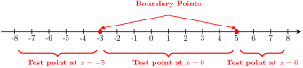
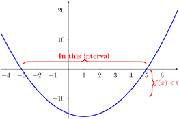

Example 397.
Solve \(x^2 - 2x \leq 15\text{.}\)
Solution.
Step 1: Move all terms to one side.
\begin{equation*}
x^2 - 2x - 15 \leq 0
\end{equation*}
Let \(f(x) = x^2 - 2x - 15\text{.}\) We want to know where \(f(x) \leq 0\text{.}\)
Step 2: Find the zeros.
Factor:
\begin{equation*}
f(x) = (x - 5)(x + 3)
\end{equation*}
The zeros are \(x = 5\) and \(x = -3\text{.}\) These are the boundary points.
Step 3: Choose test points.
The zeros divide the number line into three intervals:
-
\(\displaystyle (-\infty, -3)\)
-
\(\displaystyle (-3, 5)\)
-
\(\displaystyle (5, \infty)\)
We choose a test point in each interval: \(x = -5\text{,}\) \(x = 0\text{,}\) and \(x = 6\text{.}\)

Evaluate \(f(x)\) at each test point:
-
At \(x = -5\text{:}\) \(f(-5) = (-5)^2 - 2(-5) - 15 = 25 + 10 - 15 = 20\) → positive.
-
At \(x = 0\text{:}\) \(f(0) = 0 - 0 - 15 = -15\) → negative.
-
At \(x = 6\text{:}\) \(f(6) = 36 - 12 - 15 = 9\) → positive.
Step 4: Write the solution.
Since we want \(f(x) \leq 0\text{,}\) we choose the interval where \(f(x)\) is negative. We also include the zeros because the inequality is non-strict (\(\leq\)).
The solution is \(-3 \leq x \leq 5\text{.}\)
In interval notation: \([-3, 5]\text{.}\)
